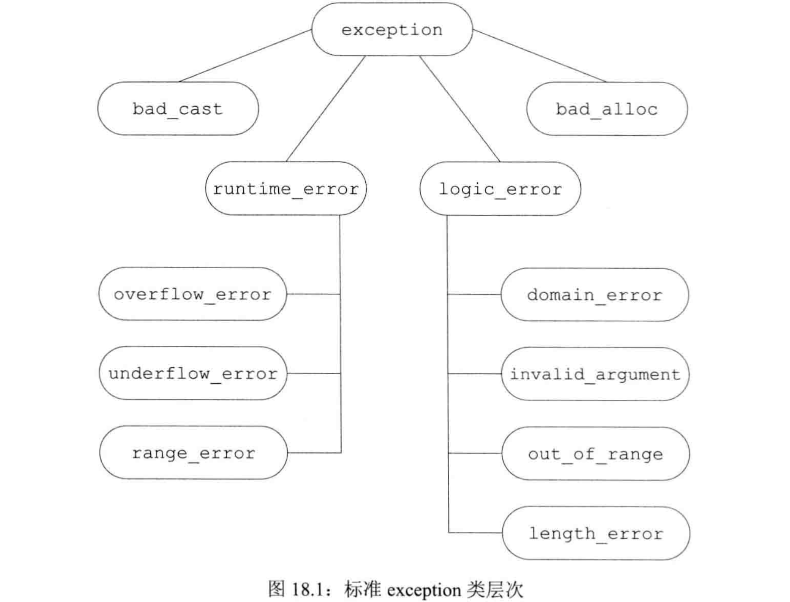
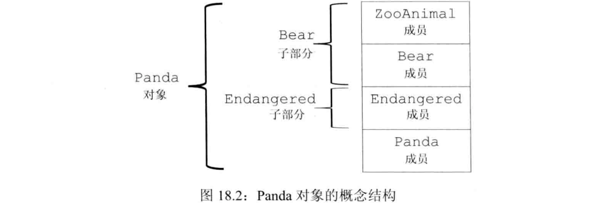
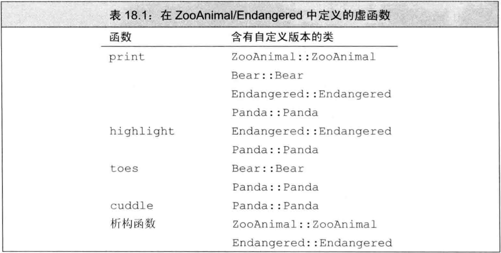
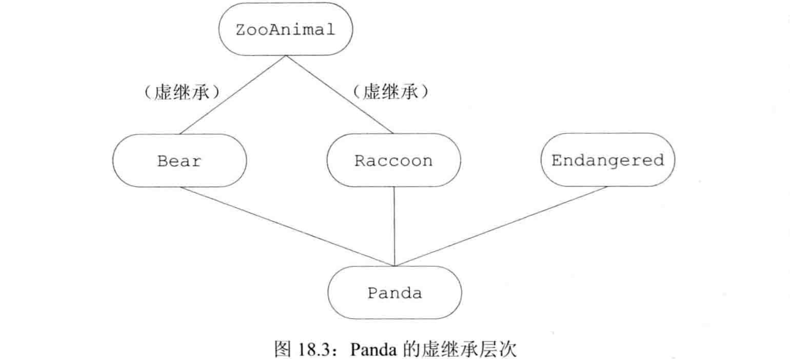

C++ primer 第18章 用于大型程序的工具
文章目录
- 大规模引用程序的特殊要求，及C++满足这些要求的工具：
- 在独立开发的子系统之间协同处理错误：
异常处理 - 使用各种库（可能包含独立开发的库）进行协同开发：
命名空间 - 对比较复杂的应用概念建模：
多重继承
- 在独立开发的子系统之间协同处理错误：
异常处理
异常处理机制允许程序在运行时对出现的问题进行通信并处理- 异常使得可将问题的
检测和解决分离，一部分用于检测问题的出现，另一部分用于解决问题
抛出异常
- 通过
抛出一条表达式来引发一个异常，被抛出表达式的类型和当前的调用链共同决定哪段处理代码被用于处理该异常。- 被选中的处理代码是当前调用链中与抛出对象类型匹配的最近的处理代码。
- 根据抛出对象的类型和内容，异常抛出部分可告知异常处理部分发生了什么错误
- 执行
throw时，throw后面的语句将不再执行，程序的控制权从throw转移给与之匹配的catch模块（该catch可能是同一函数中的局部catch，也可能位于调用发生异常的函数的另一个函数中）：- 沿着调用链的函数会提前退出
- 一旦程序开始执行异常处理代码，沿着调用链创建的对象会被销毁
- 由于throw后的语句可能不再执行，故throw的用法类似return，经常作为条件语句的一部分或是作为某函数的最后一条语句
栈展开：抛出异常后，程序暂停当前函数的执行，并立即寻找匹配的catch，若找到了匹配的catch则使用它处理异常。- 若throw语句或抛出异常的函数出现在try语句块内，则检查该try块关联的catch
- 若未找到匹配的catch且该try嵌套在其他try块中，则继续检查外层try匹配的catch
- 若仍找不到匹配的catch，则退出当前函数，在调用当前函数的外层函数中查找
- 沿着调用链不断查找，若最终一直未找到匹配的catch，则终止程序
- 假设找到了一个匹配的catch子句，则程序进入该子句执行其中代码。执行完后找到与try块关联的最后一个catch子句之后的点，从这里继续执行
- 假设一直未找到匹配的catch，程序将调用标准库函数
terminate来终止程序。（异常通常妨碍程序的正常执行，若无法处理则应该退出程序） - 栈展开过程中，调用链上的语句块可能提前退出。通常程序在调用的语句块上创建了局部对象，块退出后其局部对象也随之销毁。
若栈展开过程中退出了某个块，则这个块中创建的局部对象被自动销毁：- 销毁类类型时，析构函数将被自动调用
- 销毁内置类型时，不需做任何事
- 对象构造时发生异常，应将已构造部分销毁：
- 若异常发生在构造函数中，对象已构造了一部分，应确保已构造部分被正确销毁
- 若异常发生在数组/容器元素的初始化时，容器中已构造一部分元素，应确保已构造的元素被正确销毁
分配/释放资源应使用类来管理：- 若一个块中分配了资源，并在资源释放前发生了异常，则释放资源的代码不会被执行
- 若用类管理资源的分配和释放，则析构函数在栈展开时自动执行，资源自动释放
析构函数不应该抛出异常：- 析构函数经常在栈展开时自动执行，此时已经有一个异常，若析构函数再抛出一个异常，则同时存在两个异常
- C++只能同时处理一个异常，同时出现两个异常时将调用terminate终止程序
- 析构函数中的异常应该在析构函数内部得到处理（吞下异常），不应该向外抛出
- 现实中析构函数经常只负责释放资源，故一般不会抛出异常。所有标准库类型的析构函数都不会抛出异常。
异常对象是一种特殊对象，编译器使用异常抛出表达式对异常对象进行拷贝初始化，故throw的表达式必须有完全类型- 若该表达式为类类型，则该类必须有可访问的析构函数和可访问的拷贝/移动构造函数
- 若该表达式是数组/函数类型，则表达式被转换为对应的指针
- 异常对象位于由编译器管理的空间中，编译器确保无论最终调用哪个catch子句都可访问异常对象，异常处理完毕后异常对象被销毁
- throw不可抛出指向局部对象的指针，因为栈展开时可能销毁局部对象。（类似于函数不可返回局部对象的指针）
- throw一条表达式时，该表达式的静态类型决定异常对象的类型。若抛出表达式解引用基类指针，而指针指向派生类对象，则对象被切掉一部分。
捕获异常
- catch子句中的
异常声明类似于只包含一个形参的函数形参列表。- 若catch内不需访问抛出表达式，则可忽略该形参的名字
- 异常声明的类型决定了该catch子句能捕获的异常类型。该类型必须是完全类型，可以是左值引用，不能是右值引用
- 进入catch后通过异常对象初始化异常声明中的参数。若是非引用则拷贝，引用则是原对象的别名
- 若catch的参数是基类类型，可用派生类对其初始化。若非引用/指针则派生类被切掉
- 异常声明的静态类型决定catch语句能执行的操作。若catch的参数是基类类型，则无法使用派生类的成员
- 最佳实践：若catch接受的异常位于继承体系内，则应在异常声明中声明为引用类型
- catch匹配的过程中，最终找到的catch并不是类型最匹配的，而是第一个与异常匹配的catch，即catch匹配时不看最佳匹配而看位置靠前。结果是：
专门的catch应置于catch列表前面，否则永远不会被匹配- 程序使用具有继承关系的多个异常时必须使
派生类的catch在基类的catch之前
- 异常对象和catch之间的匹配受到诸多限制，绝大多数类型转换不被允许。
- 允许从非常量到常量的类型转换，非常量对象的throw可匹配到接受常量引用的catch
- 允许从派生类到基类的转换，派生类的throw可匹配到接受基类的catch
- 允许数组/函数到对应指针的转换，数组/函数的throw可匹配到接受对应指针的catch
- 除此之外，其他所有转换规则（算术转换、类类型转换等）都不可在匹配catch时使用
- 当一个单独catch语句不能完整处理某异常时，可通过
重新抛出的操作将异常传递给另一个catch子句，该子句位于调用链更上一层的函数而非同一级catch - 重新抛出的方式是写一条空的throw语句，即
throw; - 空的throw语句只能出现在catch语句中或catch语句内调用的函数中。运行时若在catch外遇到了空throw则该异常无法被捕获，将调用terminate终止程序
- 一个重新抛出语句并不指定新的表达式，而是将当前的异常对象沿着调用链向上传递。
- 重新抛出的异常对象是进入catch之前的那个对象，即：若在catch块内改变了异常对象，则只有形参是引用时才会将改变保留到重新抛出时。
- 例子：只有catch的形参是引用时才会将异常对象的改变保留到重新抛出时
|
|
- 有时希望无论抛出的异常是什么类型都能捕获，此时可用
捕获所有异常的catch语句，它可与任意类型的异常匹配 - 捕获所有异常的catch语句形式是用省略号做异常声明，即
catch(...) - catch(…)通常与重新抛出语句一起使用，其中catch(…)执行当前局部能完成的工作，随后重新抛出异常给其他catch处理
- catch(…)可单独出现，也可与其他几个catch语句一起出现
- 若catch(…)与其他catch语句一起出现则必须在catch列表最后，因为catch(…)之后的catch永远不会被匹配
- 例子：catch(…)与重新抛出语句一起使用
|
|
函数try语句块与构造函数
- 若异常发生在构造函数初值列表/析构函数析构部分中，则构造函数体/析构函数体中的try-catch无法捕获它
- 将构造函数/析构函数写为
函数try语句块，使得一组catch语句既能处理构造函数体/析构函数体中的异常，又能处理构造函数初值列表/析构函数析构部分的异常 - 函数try语句块的关键字try出现在构造函数初值列表的冒号
:之前 - 例子：将构造函数写为函数try语句块
|
|
- 在初始化构造函数的参数时也可能发生异常，这种异常不属于函数try语句块的一部分，函数try语句块只能处理构造函数开始执行后发生的异常。若在参数初始化过程中发生了异常，则该异常属于调用表达式的一部分，应在调用者所在的上下文中处理
noexcept异常说明
- 预知某个函数不会抛出异常是有好处的：
- 可简化调用该函数的代码，不需要进行异常处理
- 编译器若确认函数不会抛出异常，则可对他进行特殊的优化（如使用移动代替拷贝），这些优化不适用于可能出错的代码
不抛出说明：C++11中可通过noexcept说明来指定某函数不会抛出异常，形式是关键字noexcept紧跟在函数的参数列表后，在尾置返回类型之前- noexcept说明要么出现在函数的所有声明和定义中，要么一次也不出现。
- 可在函数指针的声明/定义中指定noexcept，但typedef或类型别名中不能出现noexcept
- 成员函数中的noexcept说明符需要跟在const限定符和引用限定符之后，final、override、虚函数的=0之前
- 编译器并不会检查noexcept说明的函数是否真的不会抛出异常，而是假定它不会抛出异常
- 一个函数说明了noexcept但内部抛出了异常，是可编译通过的
- 若noexcept函数在运行时真的抛出了异常，程序会调用terminate结束运行，以遵守不抛出异常的承诺。
- noexcept可用在两种情形：已确认函数不会抛出异常，或是不知道如何处理它抛出的异常。这两种情况都不需要函数的调用者来考虑异常处理
- 旧标准C++设计了一套更详细的异常说明方案使得函数可指定自身可能抛出异常的类型，方式是throw关键字后用括号括起异常类型列表，其中throw说明符与C++11中noexcept的位置相同。该方案在C++11中被取消。它的一个用处是：若函数被设计为
throw()，即异常类型列表为空，则不会抛出异常 - 例子：设计为throw()的函数不会抛出异常
|
|
noexcept说明符可接受一个可选的实参，该实参必须能转换为bool类型，用于确定一个函数能否抛出异常：- 若实参是true则承诺函数不会抛出异常
- 若实参是false则函数可能抛出异常
noexcept运算符是一个一元算符，它接受一个表达式，返回值是bool类型的右值常量表达式，用于表示接受的表达式是否会抛出异常。- 形如
noexcept(e)的noexcept运算符：- 若e调用的所有函数都做了不抛出说明，且e本身不含throw语句时，运算结果为true
- 否则运算结果为false
- noexcept运算符不会对运算对象求值。
noexcept说明符的实参经常与noexcept运算符混合使用：当一个表达式不会抛出异常时，该函数也不会抛出异常- 例子：noexcept说明符的实参与noexcept运算符混合使用
|
|
- noexcept说明符不属于函数类型的一部分，但函数的异常说明会影响函数的使用
- 函数指针及其所指的函数的异常说明之间存在关系：
- 若某函数指针可能抛出异常，则该指针可指向任何函数，即使是承诺了不抛出异常的函数
- 若某函数指针做了不抛出说明，则该指针只能指向不抛出异常的函数
- 例子：函数指针与所指函数之间异常说明的关系
|
|
- 继承体系中的虚函数的异常说明之间存在关系：
- 若基类虚函数可能抛出异常，则派生类虚函数可允许抛出异常，也可不允许抛出异常
- 若基类虚函数承诺了不抛出异常，则派生类虚函数必须也承诺不抛出异常
- 例子：继承体系中的虚函数的异常说明的关系
|
|
- 编译器合成拷贝控制成员时，同时也生成一个异常说明：
- 若对所有成员和基类的所有操作都承诺不抛出异常，则合成的成员是noexcept
- 若合成成员调用的任意函数可能抛出异常，则合成的成员是noexcept(false)
- 若定义了析构函数但未给他提供异常说明，则编译器将合成一个，合成的异常说明将与假设由编译器为类合成析构函数时所得的异常说明保持一致
异常类层次
标准库异常类构成如图18.1的继承体系 - 类
exception、bad_cast、bad_alloc定义了默认构造函数 - 类
runtime_error、logic_error没有默认构造函数，但有可接受C风格字符串/string的构造函数，该实参负责提供关于错误的更多信息。 - 类exception、bad_cast、bad_alloc、runtime_error、logic_error都有拷贝构造函数、拷贝赋值算符、虚析构函数、名为what的虚成员函数。
- 在异常类中，
what函数返回const char *，指向以null结尾的字符数组，确保不会抛出任何异常。返回的内容是用于初始化异常对象的信息。它是虚函数，故基类引用/指针调用what时执行的是动态类型的版本 - 标准库异常继承体系：
- 异常继承体系中最顶层的通常是exception，它表示某处出错，但不描述出错的细节
- 继承体系的第二层将exception分为两大类：
- 运行时错误表示只有程序在运行时才能检测到的错误
- 逻辑错误一般指可在程序代码中发现的错误
- 实际的应用程序通常会自定义exception的派生类来扩展继承体系，来处理与应用相关的异常
- 例子：自定义异常类继承自exception
|
|
命名空间
- 大型程序使用多个独立开发的库，它们定义的名字可能冲突。多个库将名字都放在全局命名空间中将引发
命名空间污染 - 传统上解决命名空间污染的方法之一是将全局名字设得很长，这些名字通常包含库的前缀，但这样不好
命名空间为防止名字冲突提供了更加可控的机制。命名空间分割了全局命名空间，每个命名空间是一个作用域，通过在某个命名空间中定义库的名字，库的作者和用户可避免全局名字固有的限制
命名空间定义
- 命名空间定义：首先是关键字
namespace，随后是命名空间的名字，后面是花括号括起来的一系列声明和定义 - 只要能出现在全局作用域的声明就能置于命名空间内，如：类、变量、函数、模板、其他命名空间
- 命名空间的名字必须在定义该命名空间的作用域内保持唯一
- 命名空间可定义在全局作用域内，也可定义在其他命名空间中，但不能定义在函数或类内部
- 例子：命名空间定义
|
|
- 命名空间中的每个名字都必须表示该空间内的唯一实体。由于不同命名空间的作用域不同，故不同命名空间内可以有同名成员
- 定义在某命名空间中的名字可被该命名空间内的其他成员直接访问，亦可被该命名空间内嵌作用域中的成员直接访问。但命名空间外的代码必须指定作用域才能访问命名空间内的名字
- 命名空间可以不连续，可定义为几个不同的部分。因此一个定义
namespace name {}可能是创建新命名空间，也可能是打开已存在的命名空间向其中添加成员 - 命名空间的不连续性，允许将几个独立的接口和实现文件组成一个命名空间，此时命名空间的组织方式类似管理自定义类/函数的方式
- 命名空间某些成员的作用是定义类、声明作为类接口的函数、对象，这些成员应置于
头文件中 - 命名空间成员的定义部分应置于
源文件中
- 命名空间某些成员的作用是定义类、声明作为类接口的函数、对象，这些成员应置于
- 某些实体只能定义一次（如非内联函数、静态数据成员、静态变量），将命名空间分离为头文件部分和源文件部分可实现这些要求
- 定义含多个不相关类型的命名空间时应使用单独的头文件和源文件分别表示每个类型
- 通常不把
#include放在命名空间内，因为这么做的含义是将该头文件中的所有名字定义为该命名空间的成员 - 例子：将命名空间分别定义于头文件和源文件中
|
|
- 命名空间中的名字必须声明在命名空间内，定义可在空间中也可在空间外
- 命名空间中的名字定义在空间外时类似类外定义成员，需用作用域算符
::指明命名空间。一旦看到含有完整前缀的名字，就可确定该名字位于该命名空间，后面的形参列表和函数体不再需要指定该命名空间 - 尽管命名空间的名字可定义在空间外，但必须定义在所属空间的外层空间中。即，可在该空间内或全局作用域中定义，但不能在不相关的作用域内定义
- 例子：命名空间外定义
|
|
- 模板特例化必须声明在原始模板所在的命名空间中，只要声明在命名空间中，就可在空间外定义它
- 例子：在空间内声明特化模板，空间外定义
|
|
- 全局作用域中定义的名字是定义在
全局命名空间中。全局命名空间以隐式的方式声明，且在所有程序中都存在。 - 使用作用域算符::可手动指定全局命名空间。由于全局作用域是隐式的，没有名字，故其中成员应写为
::member - 嵌套命名空间是定义在其他命名空间中的命名空间。
- 嵌套的命名空间同时是嵌套的作用域，它嵌套在外层命名空间的作用域中。
- 内层命名空间中声明的名字将隐藏外层命名空间的同名成员，嵌套命名空间中定义的名字只在内层空间有效，外层需用
::才可访问 - 例子：嵌套命名空间
|
|
C++11引入内联命名空间，它是一种特殊的嵌套命名空间，内敛空间中的名字可被外层空间直接使用而不需要::
- 定义内联命名空间的方法是在关键字namespace前添加inline
- inline必须出现在命名空间第一次定义的地方，后续打开空间时可写可不写
- 程序代码更新版本时经常用内联空间：当前版本放在内联空间中，历史版本放在非内联空间中，并将这些空间一起内嵌到同一个外层空间中。效果是：用外层空间直接访问名字时访问的是当前版本，用外层空间和内层空间访问名字时可指定访问历史版本
- 例子：使用内联命名空间进行版本控制
|
|
未命名的命名空间是指关键字namespace后紧跟花括号，而不指定命名空间的名字- 未命名的命名空间中定义的变量都有
静态生命周期，即第一次使用前创建，程序结束时销毁 - 未命名的命名空间可以在一个文件内不连续，但不可跨越文件。若两个文件中都有未命名的命名空间，则这两个空间互相无关，在这两个空间内可定义相同的名字且不冲突。
- 若一个头文件定义了未命名的命名空间，则该命名空间中定义的名字将在每个包含了该头文件的文件中对应不同实体
- 定义在未命名的命名空间中的名字可以直接使用，不能对未命名的命名空间的成员使用作用域算符
- 未命名的命名空间中定义的名字的作用域与该命名空间所在的作用域相同，即可跨越到上一层作用域。
- 若未命名的命名空间定义在文件的最外层作用域，则该命名空间中的名字一定要和全局作用域的名字有所区别
- 未命名的命名空间可嵌套在其他命名空间中，此时未命名的命名空间中的成员可通过外层命名空间的名字来访问
- 例子：未命名的命名空间中的名字跨越一层作用域可见
|
|
- 编译单元中声明的全局名字有
外部链接性，不同文件中的全局名字相同会引发链接错误。- C中可将全局名字声明为
static来将外部链接性改变为内部链接性，使该名字对外不可见。 - C++中将全局变量放进
未命名的命名空间，由于不同文件的未命名的命名空间是不同的空间，故其中的名字不会冲突。 - 使用未命名的命名空间保留了名字的外部链接性，即名字对外仍可见，解决命名冲突的原因是命名空间不同
- C中可将全局名字声明为
使用命名空间成员
- 可用
命名空间别名来为命名空间设定一个更短的名字，形如namespace new_name=old_name; - 也可为嵌套的空间定义别名，形如
namespace new_name=old_name1::old_name2; - 一个命名空间可以有多个别名，但不能在未定义命名空间之前就声明别名
using声明一次只引入命名空间的一个成员，形如using namespace_name::member_name;- using声明引入的名字的有效范围从using声明处开始，直到using声明所在的作用域结束
- using声明会隐藏外层作用域的同名名字
- using声明可出现在全局作用域、局部作用域、命名空间作用域、类作用域，在类作用域中using声明只能指向基类成员
using指示引入命名空间中的所有名字，形如using namespace namespace_name;- using指示引入的名字的有效范围从using指示处开始，直到using指示所在的作用域结束
- using指示可出现在全局作用域、局部作用域、命名空间作用域，但不可出现在类作用域
- 若提供了多个命名空间的using指示而未做特殊控制，则可能产生命名空间污染的问题
- using指示引入的名字作用域远比using声明引入的名字作用域更复杂：
- using声明的名字作用域与using声明语句本身的作用域一致，就像在当前作用域内创建了命名空间该成员的别名
- using指示可将命名空间成员提升到包含命名空间本身和using指示的最近作用域
- 通常命名空间会含有一些不能出现在局部作用域的定义，故using指示引入名字时不是引入到当前作用域，而是引入到最近的外层作用域
- 例子：using指示可将命名空间成员提升到包含命名空间本身和using指示的最近作用域
|
|
- 当命名空间被using指示注入到外层作用域时，很可能与外层作用域的名字冲突。这种冲突允许存在，但要想使用冲突的名字则必须用
::明确指定版本 - 例子：using指示将命名空间注入到外层作用域导致命名冲突
|
|
- 头文件若在其顶层作用域中含有using指示/using声明，则会将名字注入到所有包含该头文件的文件中
- 通常头文件应只负责定义接口部分的名字，而不定义实现部分的名字，因此头文件最多只能在它的函数或命名空间内使用using指示/using声明
- using指示一次性注入命名空间的所有名字，风险：
- 若同时对多个库使用using指示，很可能造成命名空间污染
- using指示引发的二义性错误只有在使用冲突名字的地方才会被发现，难以定位bug
- 相比于using指示，在程序中对用到的命名空间成员分别使用using声明更安全：
- using声明引入的名字可控，不容易造成命名空间污染
- using声明引起的二义性问题在声明处就会被发现
类、命名空间与作用域
- 在命名空间内部对名字的查找遵循常规查找规则：由内向外查找每个外层作用域。只有位于开放的块中且在使用点之前声明的名字才被考虑
- 在命名空间内部的类中，查找规则仍适用：成员函数适用某个名字时，先在成员中查找，再在类中找（包含基类），再在类的外层作用域中查找
- 对于命名空间中的类中的成员函数，可从函数的限定名中推断查找名字时检查作用域的次序，限定名的顺序与查找作用域的顺序相反。即
namespace_name::class_name::member_name()中名字的查找顺序是member_name->class_name->namespace_name - 命名空间中名字的隐藏规则，在调用函数时有一个
重要例外：- 给函数传递类类型对象/引用/指针时，先在常规的作用域中查找函数名，随后还会在实参类所属的命名空间中查找函数名。
- 这是
std::cout<<"hello"这种代码能跑起来的基础。 - 这个例外使得概念上作为接口一部分的非成员函数不需单独using声明就可被程序使用
- 例子：在类类型实参所属命名空间中查找调用函数的名字
|
|
- 若在程序中定义了一个标准库中已存在的名字，则：
- 或者根据一般的重载规则确定某次调用的版本
- 或者直接不会执行标准库版本
- 在
std::move/std::forward中，参数是万能引用，可匹配任意类型。若用户程序中也定义了同名函数，则必定引起冲突。因此move/forward的冲突比其他名字的冲突频繁得多。因此建议每次使用时都显式写出命名空间std:: - 当类声明了友元时，友元声明并未使友元本身可见，还需要在类外给出该友元的正式声明
- 一个未声明的类/函数若第一次出现在
友元声明中，则认为它是最近的外层命名空间的成员。该规则与实参相关的函数查找规则结合可能产生意想不到的效果 - 例子：友元声明和实参相关函数查找结合引发的意外
|
|
重载与命名空间
- 对于接受类类型实参的函数，其名字查找将进入实参类所在命名空间。这条规则也会影响函数重载
- 函数重载时将会在每个实参类及其基类所在的命名空间中搜寻候选函数，即使其中某些函数在调用语句处不可见
- 例子：在实参类及其基类所在命名空间中查找候选函数
|
|
- using声明语句声明的是一个名字，而非特定函数。该函数的所有版本都被引入当前作用域
- using声明引入的函数将重载该声明语句所属作用域中已有的同名函数。
- 若using声明在局部作用域中，则引入的名字将隐藏外层作用域的相同名字（名字查找先于类型检查）
- 若using声明所在的作用域已有一个函数与using引入的函数同名且形参列表相同，则报错
- 除此之外，using声明将为引入的名字添加额外的重载实例，扩充候选函数集
- using指示将命名空间的成员提升到外层作用域，若命名空间中的某函数与该命名空间所属作用域的函数同名，则命名空间的函数被添加到重载集合
- 对于using指示，引入一个与已有函数形参列表相同的函数不会报错（与using声明不同），只需要在使用时指明版本
- 例子：using指示将命名空间成员提升到外层作用域
|
|
- 若存在多个using指示，则来自每个命名空间的名字都会成为候选函数集的一部分
- 例子：多个命名空间的using指示扩充候选函数集
|
|
多重继承与虚继承
多重继承是指从多个直接基类中产生派生类，多重继承的派生类继承了所有父类的属性- 多重继承概念简单，但多个基类产生的细节可能带来错综复杂的设计和实现问题
多重继承
- 在派生类的派生列表中可包含多个基类，每个基类前有可选的访问说明符：
- 若派生类关键字是class则默认的派生访问说明符是private
- 若派生类关键字是struct则默认的派生访问说明符是public
- 多重继承的派生列表也只能包含已被定义的类，且它们不能是final
- C++对派生类能继承的基类个数未进行特殊规定，但一个基类在同一派生列表中只能出现一次
- 例子：多重继承的派生列表
|
|
- 在多重继承中，派生类的对象包含每个基类的子对象。如上例，Panda从Bear和Endangered中派生而来，Bear又由ZooAnimal派生而来，如图18.2 
- 构造一个派生类的对象将同时构造并初始化它的所有基类子对象，多重继承的派生类的构造函数初始列表只能初始它的直接基类
- 构造派生类时，基类的构造顺序与派生列表的顺序保持一致，而与派生类构造函数初值列表的顺序无关
- 构造派生类时若未在构造函数初值列表中初始化某个基类，则这个基类部分被默认初始化
- 例子：构造函数初值列表初始化多个基类，基类初始化顺序是派生列表的顺序
|
|
- C++11允许派生类从它的一个或几个基类中继承构造函数，但若从多个基类中继承了形参列表相同的构造函数则产生错误
- 若一个派生类从多个基类中继承了形参列表相同的构造函数，则派生类必须为这种形参列表的构造函数定义自己的版本
- 例子：从多个基类继承的构造函数形参列表相同时，派生类必须自己定义
|
|
- 派生类的析构函数只负责清除派生类本身分配的资源，派生类的成员和基类部分都是自动销毁的
- 合成的析构函数体为空
- 析构函数的调用顺序和构造函数相反：先析构派生类后析构基类，多继承遵循类派生列表的逆序
- 多继承的派生类若定义了自己的拷贝/移动/赋值操作，则必须在完整的对象上执行这些操作，即派生类的对应成员需手动调用直接基类的对应成员。
- 只有当派生类使用合成版本的拷贝/移动/赋值成员时，才会自动对基类部分执行这些操作。
- 在合成的拷贝控制成员中，每个基类部分分别调用自己的对应成员隐式完成构造/赋值/销毁操作
类型转换与多个基类
- 无论是一个基类还是多个基类，派生类的指针/引用都可自动转换为可访问的基类的指针/引用，即可令可访问的基类指针/引用指向派生类对象
- 对于多个基类情形，编译器不会在派生类向多个基类的转换中进行比较，转换到任何基类都一样好
- 例子：派生类向基类的转换
|
|
- 对象/指针/引用的静态类型决定可使用哪些成员
- 例子：类相关函数的定义如表18.1 
|
|
多重继承下的类作用域
- 只有一个基类时，派生类的作用域嵌套在直接基类和间接基类的作用域中。查找名字的过程由派生类作用域向基类作用域逐级查找，派生类的名字将隐藏基类的同名成员
- 若在派生类对象/指针/引用中用了某个名字，则程序并行地在其多个基类中查找该名字。若该名字在多个基类中被找到，则有二义性（派生只是引入潜在的二义性，真正使用该名字时才会报错）
- 对于派生类，从多个基类中继承同名成员完全合法，只是使用该名字时必须明确指出版本，即使用
:: - 若派生类的名字在多个基类中被找到，则使用该名字时报错：
- 若该名字直接定义在多个基类中，是二义性
- 若该名字在多个基类中是形参列表不同的函数，也是二义性
- 若该名字在一个基类中是private而在另一个基类中是public/protected，也是二义性
- 若该名字在一个基类中直接找到而在另一个基类的间接基类中找到，也是二义性
- 名字查找先于类型检查，当编译器在两个作用域中同时发现一个名字，直接报错二义性
- 避免这种二义性的方法是在派生类中再定义一次这个名字，覆盖基类名字，避免在基类中查找
- 例子：在派生类中定义名字，屏蔽基类中同名，避免二义性
|
|
虚继承
- 尽管派生列表中同一基类只能出现一次，但实际上派生类可多次继承同一个基类：
- 可以将一个类继承为两个直接基类的间接基类（菱形继承，如图18.3）
- 可以将一个类继承为直接基类，同时继承为另一个直接基类的间接基类
- 菱形继承例子：
- IO库的istream和ostream都继承了抽象基类base_ios，它用于保存流的缓冲内容并管理流的条件状态
- iostream同时继承了istream和ostream，故它两次继承base_ios
- 默认派生类中含有继承链上每个基类的子部分，若某类在派生中出现多次，则派生类中将包含该类的多个子对象
- 有时候不希望派生类中包含同一基类的多个子对象，例如iostream中若同时含有两个base_ios则无法使输入输出操作共享缓冲区和条件状态
- 通过
虚继承，可令某个类做出声明，承诺共享它的基类，被共享的基类子对象称为虚基类 - 通过虚继承机制，无论虚基类在继承体系中出现了多少次，任意一个派生类中都只含有它的一个子对象
- 使用虚继承机制解决多次继承的问题，如图18.3 
- 虚继承的一个不太直观的特性：必须在虚派生的需求出现之前就已完成虚派生的操作。即，经常并不知道一个类是否会被继承多次，因此不知道由它而来的派生是否应该是虚派生
- 实际编程中，位于中间层次的类将其继承基类的方式声明为虚继承并不会出问题。虚派生只影响从虚基类的派生类中进一步派生出的类，它不影响虚基类的派生类。
- 指定虚基类的方式是在派生列表中添加关键字
virtual，派生列表中public和virtual的顺序随意 - virtual说明符表明，在后续的派生类中应共享虚基类的同一份实例
- 对于什么样的类可以是虚基类，没有特殊规定
- 例子：使用虚基类解决菱形继承
|
|
- 无论基类是否是虚基类，派生类对象都能被可访问的基类的指针/引用访问
- 每个共享的虚基类中在派生类中只有唯一一个共享的子对象，故该基类的成员可被直接访问，没有二义性
- 派生路径中覆盖虚基类的成员（即在虚基类的派生类中再次定义该成员）：
- 若虚基类的成员只被一条派生路径覆盖，则派生类仍可直接访问被覆盖的成员
- 若虚基类的成员被多条派生路径覆盖，则派生类不可直接访问被覆盖的成员，需要自定义该成员
- 假设菱形继承：类
B定义了成员x，D1和D2由B虚继承得到，D继承自D1和D2，则在D的作用域中，x通过两个基类都可见。若通过D的对象使用x，有几种可能：- 若
D1和D2中都未定义x，则x被解析为B的成员，不存在二义性。因为只在虚基类中有定义 - 若
D1或D2其中之一定义了x，则x被解析为D1或D2的成员，不存在二义性。因为D1和D2是派生类，位于内层作用域，优先级更高 - 若
D1和D2中都定义了x，则直接访问x时是二义性。因为D1和D2的优先级相同
- 若
- 解决上述多条路径覆盖导致的二义性，应该在派生类中自己定义该成员，其中可使用作用域来指定基类中的该成员
构造函数与虚继承
- 在虚派生中，
虚基类由最终的派生类在其构造函数初值列表中初始化（越过了继承链），而非由其直接派生类初始化 - 若虚基类由其直接派生类初始化，则会在多次继承时被重复初始化多次
- 若最终的派生类未初始化虚基类，则虚基类默认初始化
- 继承体系中的任何类都可能在某个时刻成为“最终的派生类”，只要创建了虚基类的派生类对象，该派生类的构造函数就会越过继承链初始化虚基类
- 例子：越过继承链初始化虚基类
|
|
- 含有虚基类的对象构造时
最先初始化虚基类：- 首先使用提供给最终派生类构造函数的初值来初始化虚基类（若最终的派生类未显式初始化虚基类，则虚基类默认初始化）
- 一个类可有多个虚基类，这些虚基类的初始化顺序是它们在派生列表中的顺序
- 然后按照直接基类在派生列表中的顺序初始化非虚基类
- 构造派生类时，编译器按照直接基类的声明顺序对其依次检查，若基类中含有虚基类，则先构造虚基类，然后按照声明顺序逐一构造其他非虚基类
- 合成的拷贝/移动/赋值对各基类部分的执行顺序和构造函数一致，而析构函数与其相反
- 例子：
|
|